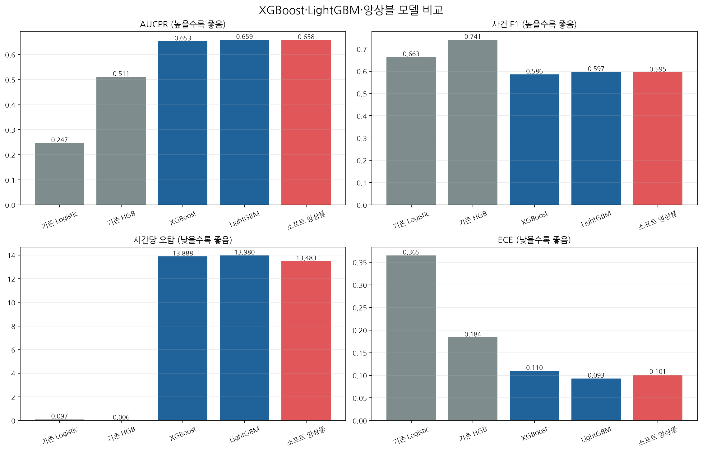
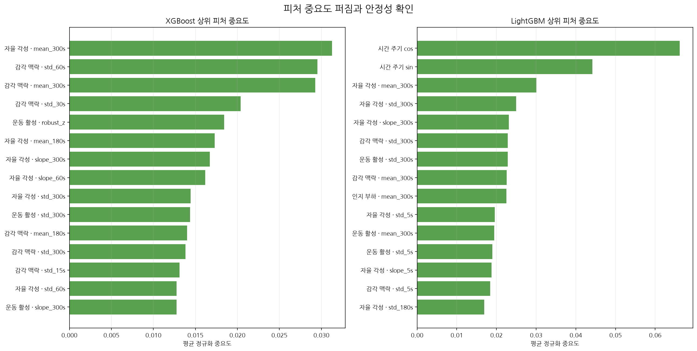
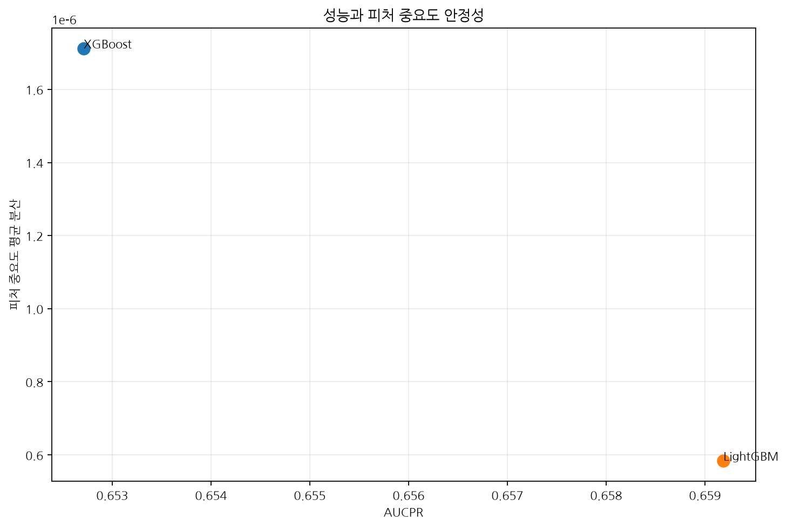

도전자 앵커: lightgbm · 운영 기준 모델: existing_hist_gradient_boosting · 승격 상태: 승격 보류(평가 범위·임계값 불일치) · 폰트: NanumGothic · 실행 시각: 2026-08-02T21:22:50+09:00



| 모델 | AUCPR | 사건 F1 | 시간당 오탐 | Brier | ECE | 평가 범위 | 앵커 |
|---|---|---|---|---|---|---|---|
| 기존 Logistic | 0.24672272552005048 | 0.6634615384615384 | 0.09722222222222222 | 0.17462006968535265 | 0.36512159763983054 | existing_full_validation | nan |
| 기존 HGB | 0.511066967178253 | 0.7413793103448276 | 0.005555555555555556 | 0.06428751338937501 | 0.183715706265556 | existing_full_validation | nan |
| XGBoost | 0.6527114072825485 | 0.5856152512998267 | 13.888260853796774 | 0.11424789035622725 | 0.10988214081227704 | bounded_validation_sample | lightgbm |
| LightGBM | 0.6591881103567877 | 0.5967707304504659 | 13.979932542600714 | 0.10965407240789471 | 0.09297316458478631 | bounded_validation_sample | lightgbm |
| 소프트 앙상블 | 0.658314881804665 | 0.5946810810810811 | 13.482683079088439 | 0.11122181047936562 | 0.1013591817390833 | bounded_validation_sample | lightgbm |
ExtraTrees는 요청대로 이번 비교에서 제외하고 마지막 후보로 남겼습니다. 도전자와 기존 HGB는 평가 범위·임계값이 달라 자동 승격하지 않았습니다.